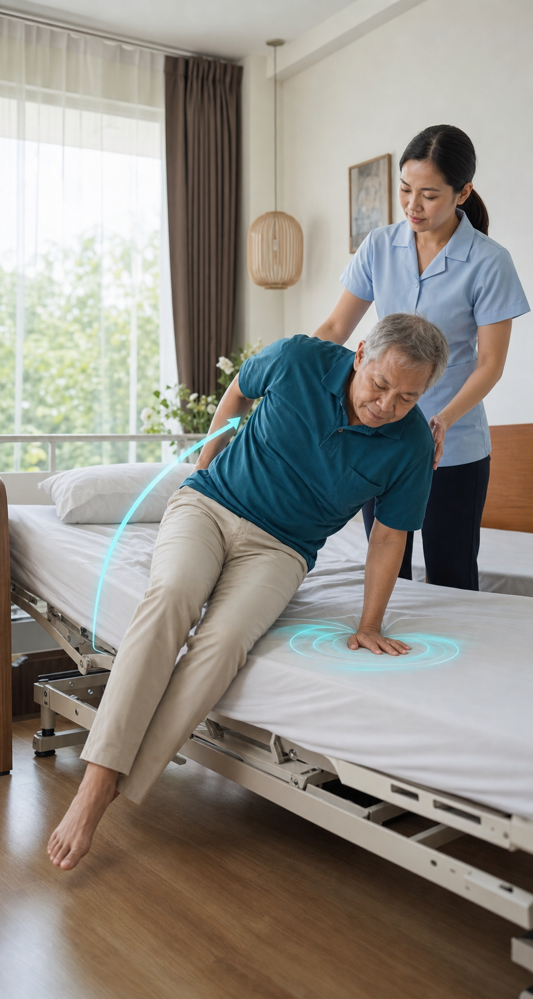

แผน 07 · ฟื้นความสามารถพื้นฐานในบ้าน

แผนสำหรับผู้ที่เริ่มใช้เวลาบนเตียงมากขึ้นกลับมาพลิกตัว นั่ง และย้ายตัวได้มากขึ้น
เริ่มจากสิ่งที่ทำได้จริงบนเตียง แล้วค่อยสร้างพื้นฐานการนั่งและย้ายตัวอย่างปลอดภัย
โรคและภาวะที่เกี่ยวข้อง
กดเปิดเฉพาะเรื่องที่ต้องการอ่าน รายละเอียดจะแสดงแทนที่กันเพื่อไม่ให้หน้าแอพรกรุงรัง
3 ปัญหาที่ควรจัดการก่อน
แต่ละหัวข้อเริ่มจากแผนจัดการที่บ้าน แบบประเมินเพิ่มเติมเป็นทางเลือก และงานที่ต้องใช้นักกายภาพจะแสดงไว้ขนาดเล็กด้านล่าง
01พลิกตัวและจัดท่าบนเตียงได้ไม่คล่อง
การอยู่ท่าเดิมนานทำให้ขยับยากขึ้น ผิวหนังรับแรงกดซ้ำ และผู้ดูแลต้องออกแรงมาก
แผนจัดการปัญหาแบ่งการพลิกเป็นจังหวะ ใช้แขน ขา และสายตานำการหมุน เปลี่ยนท่าตามแผนเฉพาะบุคคล และตรวจผิวหนังบริเวณปุ่มกระดูกทุกวัน
!นักกายภาพประเมินแรงลำตัว ข้อยึดติด การจัดท่า จุดรับแรงกด และวิธีช่วยพลิกตัวที่ลดแรงผู้ดูแล
02นั่งขอบเตียงและเตรียมย้ายตัวยังไม่ปลอดภัย
การคุมศีรษะ ลำตัว และอาการเวียนหัวเมื่อลุกเปลี่ยนท่า เป็นพื้นฐานก่อนยืนหรือย้ายไปเก้าอี้
แผนจัดการปัญหาเริ่มจากตะแคงแล้วดันตัวขึ้นนั่ง เท้าวางมั่นคง มีผู้ดูแลอยู่ด้านที่เอน และเพิ่มเวลานั่งทีละน้อยเมื่อไม่เวียนหัว
!นักกายภาพประเมินการทรงตัวในท่านั่ง ความดันเมื่อลุกเปลี่ยนท่า การควบคุมลำตัว และความพร้อมก่อนย้ายตัว
03ย้ายตัวลำบากและภาระผู้ดูแลเพิ่มขึ้น
ความสูงเตียง ตำแหน่งเก้าอี้ ระดับคนช่วย และวิธีจับพยุงมีผลต่อความปลอดภัยของทั้งผู้ป่วยและครอบครัว
แผนจัดการปัญหาจัดเส้นทางเตียงไปเก้าอี้ให้สั้นและโล่ง ใช้ระดับช่วยเดิมจนปลอดภัยสม่ำเสมอ และไม่ดึงแขนหรือยกผู้ป่วยด้วยแรงคนเดียว
!นักกายภาพประเมินเทคนิคย้ายตัว อุปกรณ์ ความสูงเตียงและเก้าอี้ พื้นที่บ้าน และวิธีช่วยที่ลดการบาดเจ็บของผู้ดูแล
โปรแกรมเริ่มต้น
เริ่มได้เฉพาะเมื่อไม่มีอาการอันตรายและใช้ระดับช่วยเดิมที่ปลอดภัย โปรแกรมละเอียดจะปรับจากคำตอบด้านบน
พลิกตัวแบบแบ่งเป็นจังหวะข้างละ 3 ครั้ง วันละ 1–2 รอบ ผู้ดูแลช่วยเฉพาะช่วงที่ติด
ขยับแขนขาบนเตียงเท่าที่ทำได้ข้อละ 5–8 ครั้ง วันละ 2 รอบ ช่วยเฉพาะส่วนที่ผู้ป่วยขยับเองไม่ได้
ปรับโปรแกรมให้เฉพาะตัวขึ้น
Barthel Index และความสามารถ 3 ด้านจะช่วยให้ระบบเลือกว่าจะเริ่มบนเตียง ฝึกนั่ง หรือเตรียมย้ายตัว พร้อมปรับ FITT ตามระดับช่วยจริง
Barthel Index0/20
ตอบจากสิ่งที่ทำได้จริงในช่วงนี้ ไม่ใช่สิ่งที่เคยทำได้ก่อนป่วย
ตอบ Barthel และแบบประเมินทั้ง 3 ปัญหาให้ครบ
ตารางฝึก 7 วัน
สิ่งที่ควรให้นักกายภาพประเมินเพิ่ม
นำข้อความนี้ไปวางใน AI ที่คุณใช้ เช่น ChatGPT, Claude, Gemini, Grok หรือแอปอื่น ๆ เพื่อให้ช่วยวิเคราะห์อาการและถามต่อจากข้อมูลของคุณได้